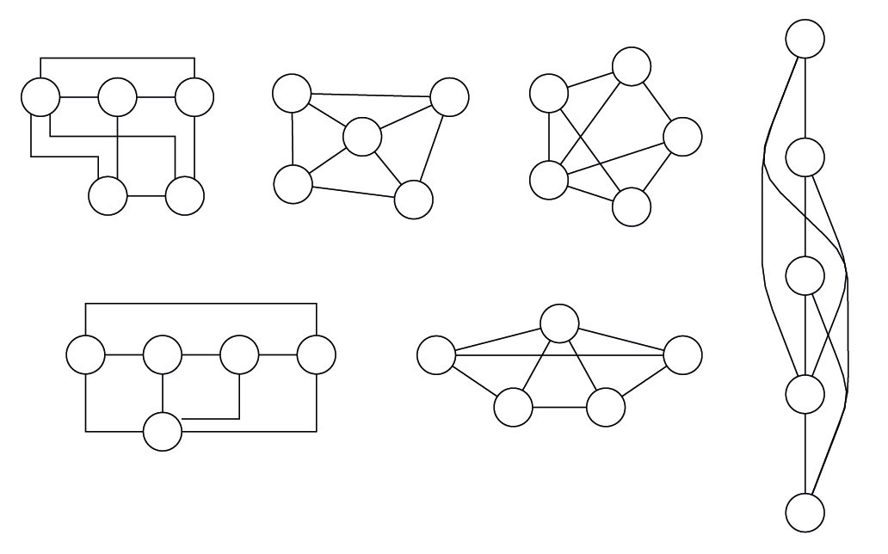
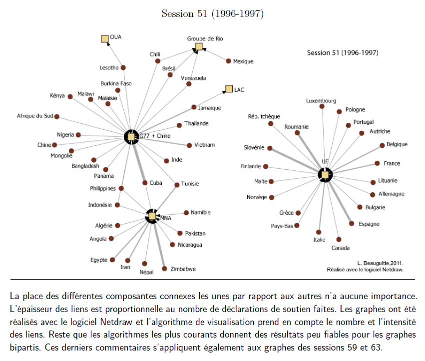
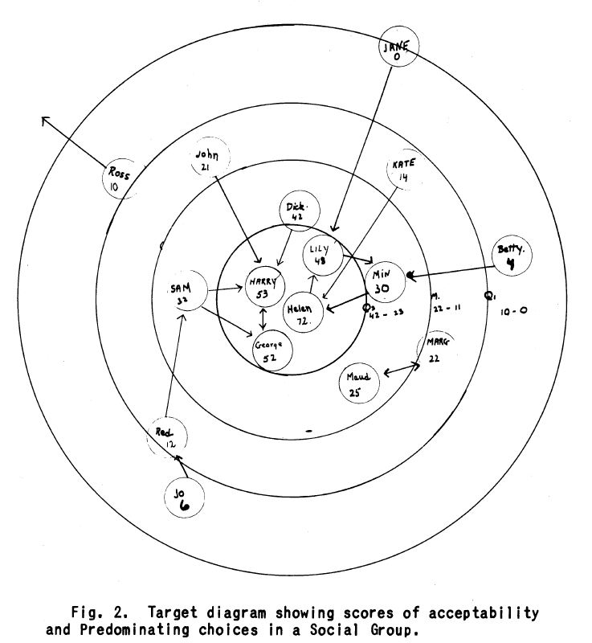
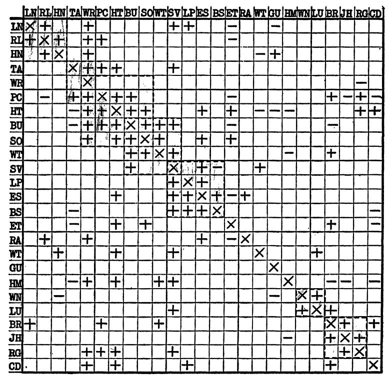
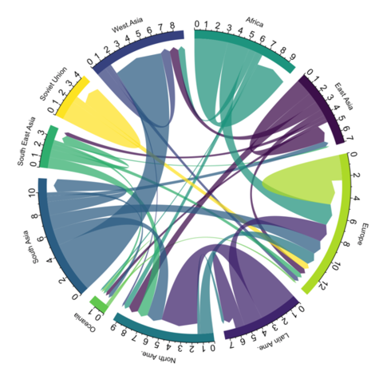
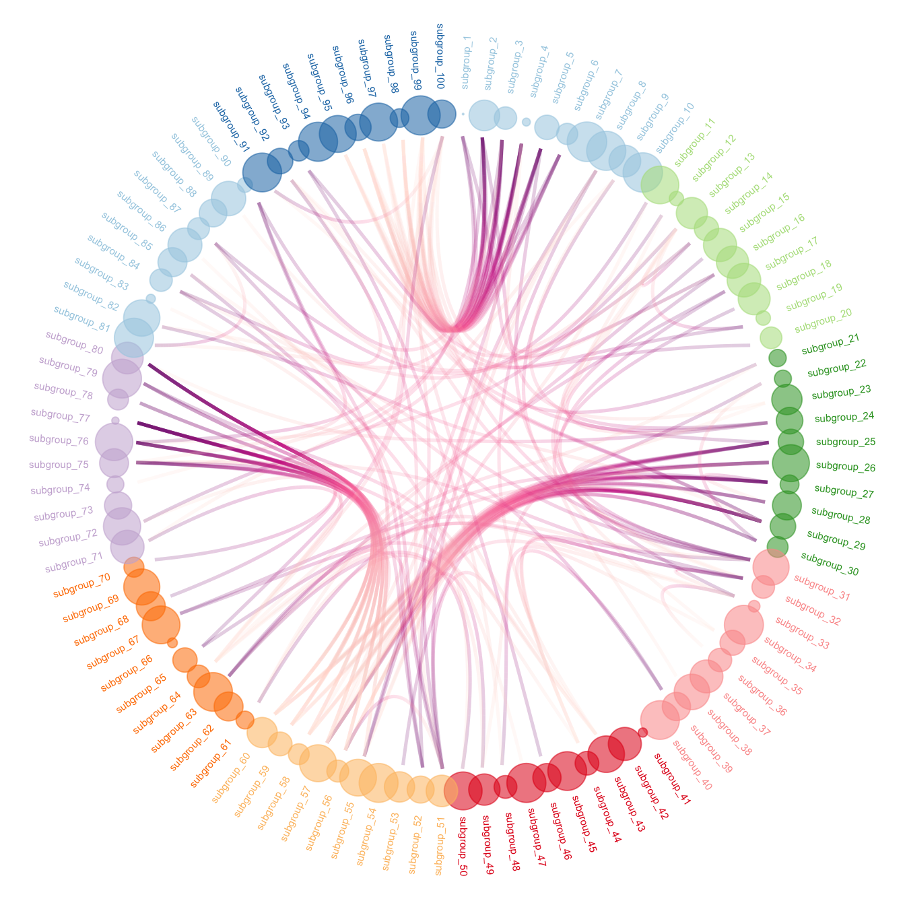
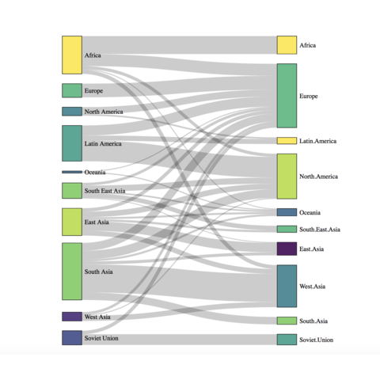
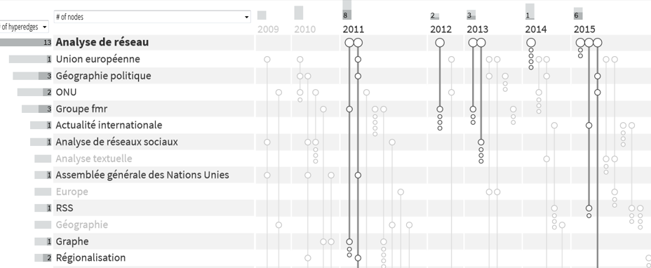

12 Visualiser les données relationnelles
La visualisation de données (dataviz), qu’elles soient ou non relationnelles, est un champ de recherche à part entière et ce chapitre ne fait qu’effleurer quelques aspects liés à ce sujet 1.
La visualisation de données est indispensable au départ d’une recherche : elle permet d’explorer ses données, de les comprendre, de repérer d’éventuelles anomalies et, avec un petit peu de pratique, de faire émerger de nouvelles questions de recherche. Elle est également utile à l’arrivée, lorsqu’il s’agit de présenter ses résultats.
Si la visualisation sous forme dite “liens - nœuds” est sans aucun doute la plus courante, y compris dans ce petit guide pratique, elle n’est pas la seule forme possible et elle n’est pas non plus nécessairement la plus pertinente.
12.1 Visualiser pour explorer
Lorsque j’explore mes données, je n’ai pas besoin de produire de belles images et de construire une légende impeccable. J’ai aussi le droit de m’affranchir de toutes les règles de la sémiologie graphique. L’exploration de données relationnelles commence presque toujours par une déception : l’image produite est moche, on n’y voit rien, il y a des liens partout et c’est tout à fait normal ! Produire une image lisible prend du temps et suppose généralement une sélection drastique - mais raisonnée - de ce que l’on souhaite montrer 2.
Avant de commencer à filtrer sommets et liens pour tenter d’y voir quelque chose, ayez le réflexe de faire quelques mesures basiques (densité, diamètre, composantes, degré, etc.) et visualisez leur distribution. S’il y a plusieurs composantes, mesurez-les et visualisez-les une à une. Pensez à examiner vos isolés, peut-être partagent-ils des caractéristiques intéressantes. Il y a sans doute dans votre réseau des individus qui vous intéressent plus que d’autres : visualiser leur réseau personnel d’ordre 1, 2 ou plus.
Pensez à varier les algorithmes de visualisation : on ne voit pas la même chose et on ne se pose pas les mêmes questions en fonction de l’image que l’on a sous les yeux. Vous avez trois grandes familles d’algorithmes de visualisation à votre disposition :
- les algorithmes plaçant les sommets en fonction de la géométrie (grille / grid, circulaire / circular) ;
- les algorithmes plaçant les sommets en fonction de propriétés statistiques de la matrice d’adjacence (MDS) ;
- les algorithmes dits force-based qui procèdent par itérations afin de minimiser un certain nombre de critères (chevauchement de sommets, croisement de liens notamment). Les algorithmes Force Atlas (Gephi), Kamada-Kawai, Fruchterman-Reingold, nicely (igraph) appartiennent à cette catégorie.
Cette dernière famille d’algorithmes est sans doute la plus utilisée car elle est produit des projections lisibles, sauf quand le réseau est très dense. Gardez à l’esprit que la plupart de ces algorithmes sont non déterministes (vous obtiendrez une image légèrement différente chaque fois que vous les relancerez) et qu’ils donnent également des résultats différents d’un logiciel à l’autre. L’algorithme random (aléatoire) est disponible dans tous les logiciels. Comme le nom l’indique, les sommets sont placés de façon aléatoire et c’est évidemment le meilleur moyen de produire un réseau illisible.
La figure 12.1 montre le même réseau projeté de différentes façons. Toutes ces images sont strictement équivalentes mais certaines pourraient sans doute donner lieu à des commentaires différents.

Minuscule réseau (5 sommets, 8 liens) projetés avec 6 algorithmes différents parmi la vingtaine proposée par le logiciel yEd. Il est tout à fait possible de produire des réseaux esthétiquement agréables et illisibles (celui de droite notamment).
Les stratégies les plus communes pour y voir un peu plus clair sont :
- supprimer les isolés (qu’on a parfois tendance à oublier dans les analyses) ;
- supprimer les sommets de degré inférieur à x, x variant selon la distribution des degrés ;
- en cas de liens valués, supprimer les liens d’intensité inférieure à x (même remarque que précédemment) puis suppression des sommets isolés ;
- si elle existe, ne conserver que la composante géante.
Il est possible en fonction de la structure de votre réseau d’adopter des solutions autres, par exemple de supprimer les liens les plus intenses ou les sommets les plus centraux.
Les conseils précédents s’appliquent à tous les types de réseaux. Un mot sur les réseaux autres vus dans les chapitres précédents.
Il existe un algorithme courant généralement appelé bipartite pour les réseaux bimodaux. Il place les sommets \(V_1\) sur une ligne en haut et les sommets \(V_2\) sur une ligne en bas. Cet algorithme n’a aucun intérêt et n’aide pas à explorer ses données. Choisissez deux couleurs différentes (ou deux formes si vous n’êtes pas sensible aux couleurs) pour vos deux populations de sommets et utilisez de préférence des algorithmes force-based, vous y verrez plus clair.
Lorsque vous étudiez des réseaux multiplexes, inutile de chercher à visualiser toutes vos relations sur la même image, vous ne verrez rien. Explorez vos relations une à une et explorer les réseaux synthétiques que vous avez produits. Testez d’une part en gardant la même position pour les sommets, ce qui facilite la comparaison, et d’autre part avec des algorithmes force-based adaptés à chaque couche, ce qui produira une image lisible pour chacune d’entre elles.
En ce qui concerne la visualisation de réseaux dynamiques, plusieurs logiciels permettent la réalisation d’animation. En phase exploratoire, il est probable que le résultat soit décevant en terme de lisibilité. Le conseil donné à l’instant pour les réseaux multiplexes (1. figer les sommets et étudier les relations à chaque temps \(t\) puis 2. utiliser un algorithme force-based à chaque temps \(t\)) reste valable.
Dans le cas des réseaux personnels, vous gagnerez du temps en supprimant ego avant de visualiser.
À l’intention des formatrices
Animer un atelier sur la visualisation de données suppose que les participantes 1. connaissent un minimum l’analyse de réseau et 2. aient commencé à prendre en main un logiciel.
Pour montrer en quoi consiste l’exploration de données (statistique et visuel), le plus efficace me semble être de fournir un jeu de données aux participantes et de donner une consigne du type “vous devez présenter ces données en 5 minutes lors d’une réunion, vous pouvez présenter des tableaux, des figures, etc. À vous de jouer”.
Choisissez de préférence des données suffisamment généralistes pour pouvoir être manipulées sans être spécialiste de la question. Les jeux de données du Correlates of War project (relations commerciales et relations diplomatiques entre États par exemple) m’ont souvent servi.
Le même jeu de données peut bien entendu servir pour le volet communication visuelle (voir partie suivante) mais il est nécessaire dans ce cas que les participantes aient des connaissances thématiques afin de pouvoir tester des hypothèses ou que vous leur prépariez des demandes précises.
Quel que soit le type de réseau analysé, il est souvent plus facile de l’explorer visuellement avec un logiciel clicodrome (avec interface graphique et menus déroulants) : déplacer un sommet ou plusieurs, les sélectionner, les supprimer est plus rapide. Ce qui n’empêche pas en parallèle de l’explorer statistiquement, si besoin avec un logiciel autre.
12.2 Visualiser pour communiquer
Que ce soit un histogramme, un nuage de points, une carte ou un réseau, à partir du moment où vous produisez une image destinée à un public, c’est parce que vous souhaitez faire passer un message clair et que vous souhaitez que ce message soit compris. Pour que ce message soit compris, il est recommandé de respecter quelques règles de sémiologie graphique et de fournir à vos lectrices un titre (problématisé si possible) et une légende (explicite et exhaustive).
La sémiologie graphique étant enseignée dans une poignée de disciplines seulement, rappeler quelques règles s’impose :
- la taille (des sommets) et l’épaisseur (des liens) sont des variables adaptées pour représenter des variables quantitatives (degré, intensité du lien) ;
- la couleur et la forme sont adaptées pour représenter des variables catégorielles (attribut des sommet, type de relation) ;
- la valeur (dégradé de gris, gamme de couleurs ordonnées) est adaptée pour représenter une variable ordinale.
Une remarque supplémentaire sur les variables visuelles : ne surestimez la capacité de lecture du cerveau humain. Nous avons des ordinateurs puissants capables de générer des figures avec des dizaines de nuances de couleur et des milliers d’objets. Certes, mais notre cerveau renâcle à distinguer plus de 7 couleurs 3 et plus de 5 formes différentes dans une figure. Rappelez-vous également qu’au moins 10 % de votre lectorat ne perçoit pas correctement les couleurs : des palettes adaptées existent 4, il est possible aussi de produire des réseaux lisibles en noir et blanc.
Un certain nombre de figures présentes dans les chapitres précédents montre une utilisation adaptée de ces variables visuelles. Dans la figure 2.1, la forme des sommets varie en fonction du genre et la forme des liens varie en fonction de leur nature. Idem pour la figure 8.1 où, cependant, la légende ne permet pas de comprendre pourquoi les noms de certaines familles sont entourées et d’autres non ni à quoi correspondent les patates dessinées avec des figurés variables.
Ce qui m’amène au point suivant : une légende est nécessaire 5 pour que vos lectrices comprennent ce que vous souhaitez montrer. Si dans votre image, il y a des tailles, des couleurs et des formes différentes, il faut que la légende permette de comprendre ce qu’elles signifient. Il est important également d’expliciter ce que signifient les liens entre vos sommets.
Si par exemple vous estimez indispensable de faire de la détection de communautés, indiquez que les couleurs de sommets correspondent aux communautés détectées par l’algorithme \(x\). Vous pouvez même, et personne ne vous en voudra, indiquer la modularité entre parenthèses et préciser quel logiciel vous avez utilisé pour produire votre figure 6.
Petite précision de géographe formé à la cartographie : vous n’avez pas besoin d’indiquer légende au dessus de la légende.

Soit un extrait de ma thèse (2011, p. 233). J’ai reproduit ici le bas de la figure 3.22 intitulée “États soutenant des déclarations faites par des groupes (sessions 45 et 51)”. Le titre n’est pas bon : trop descriptif. Il n’y a pas de légende : on devine que couleur et forme des sommets différencient États (membres de l’Assemblée générale de l’ONU) et groupes régionaux mais ça reste implicite. Un carton avec les types de sommet et la définition de l’épaisseur des liens serait bienvenu. Indiquer en commentaire (et/ou sur l’image elle-même) le logiciel utilisé et le sens à donner au placement des composantes est, me semble-t-il, une bonne pratique. Par contre, critiquer l’algorithme de visualisation utilisé sans préciser duquel il s’agit n’est pas très sérieux…
À l’intention des formatrices
Rien de plus simple (malheureusement) que d’animer une séquence pédagogique sur le sujet : vous exposez les règles de base de sémiologie, vous expliquez ce que doit contenir la légende et vous prenez le réseau de votre choix pour le soumettre à la critique. La deuxième étape consiste évidemment à construire une légende correcte.
Par contre, demander de trouver un titre problématisé est plus compliqué si les participantes n’ont pas de connaissances thématiques sur le réseau utilisé comme exemple.
De manière plus générale, encouragez l’esprit critique. Ce n’est pas parce que la spécialiste mondialement reconnue a publié une figure dans la revue de référence que cette figure n’est pas perfectible. C’est en critiquant x dizaines de cartes qu’on apprend peu à peu à en produire des correctes et c’est exactement le même apprentissage avec les réseaux.
Deux derniers conseils pour finir :
- si vous avez beaucoup d’informations à transmettre, faites plusieurs figures lisibles plutôt que d’essayer de tout mettre dans une seule ;
- adaptez vos figures à votre lectorat. Si vous vous adressez à des spécialistes de l’analyse de réseau, inutile de représenter ego dans un réseau personnel. Si vous vous adressez à des publics autres, garder ego rendra la figure plus compréhensible.
12.3 Au-delà du lien-nœud
Cela fait plus de 70 ans que des chercheuses indiquent à juste titre que, dans certains cas, la forme lien-nœud est peu lisible (réseau dense) 7. De nombreuses alternatives sont pourtant disponibles.
La matrice ordonnée peut être beaucoup plus lisible que le lien-nœud pour représenter les communautés dans un réseau dense, ce que suggéraient Forsyth et Katz dès 1946 (figure 12.3) et a été confirmé à plusieurs reprises depuis. Plus récemment, des formes hybrides mêlant matrices (pour les parties denses) et lien-nœud ont été proposées et permettent si l’on en croit les travaux de Di Giacomo et al. (2021) d’améliorer la lisibilité des figures.


Mary Northway étudie les relations entre élèves. Les cercles correspondent aux quartiles des degrés entrants, ce qui met au centre les élèves les plus populaires. Les sociogrammes sont évidemment dessinés à la main à l’époque et cette proposition vise à justifier statistiquement le placement des sommets. Elaine Forsyth et Leo Katz plaident pour l’utilisation de la matrice ordonnée qui permet de mettre en évidence les sous-groupes fortement connexes autour de la diagonale. Par contre, la matrice est moins efficace pour identifier des chemins entre sommets, ce que confirmeront des études ultérieures.
Les diagrammes en cordes (chords) peuvent parfois donner des résultats intéressants si la partition des sommets en ensembles disjoints a un sens thématique fort. L’exemple des migrations internationales où pays émetteurs et récepteurs sont groupés par grandes régions fait partie de ces cas. La plupart du temps, ce type de visualisation est intéressante si elle autorise l’interactivité (sélection d’un sommet ou d’un groupe de sommets notamment).



Les trois figures sont tirées du site https://r-graph-gallery.com.
Parfois combinée avec le diagramme en cordes, le regroupement des liens (edge-bundling) consiste à agréger des liens ayant un tracé à peu près similaire. Ce type de visualisation peut donner d’excellents résultats quand il existe une contrainte de localisation sur les sommets (cartographie de flux).
L’utilisation de diagramme de Sankey peut donner des résultats esthétiquement agréables ; je ne suis pas tout à fait certain de la lisibilité des figures et de la clarté du message délivré (figure 12.4). Par contre, je suis de plus en plus convaincu par l’utilisation de l’hypergraphe et de la visualisation dite BioFabric pour la visualisation de réseaux bimodaux (Valdivia et al. (2018) ; figure 12.5).
Enfin, si le réseau est de grande taille, peut-être que vouloir le représenter in extenso sous forme graphique n’est pas utile. Une distribution des degrés sera sans doute plus lisible et très largement suffisante si vous voulez signalez le caractère hiérarchisé de votre réseau. Plutôt que de colorer une grosse boule dense si vous souhaitez montrer les communautés détectées avec une méthode précise, agrégez les sommets (cf la section blockmodeling). N’oubliez pas : votre figure vise à transmettre un message clair.
Pour aller plus loin
L’un de mes ouvrages préférés de sémiologie graphique est le superbe livre de Tufte (2001). Certes, il assène un certain nombre de règles sans les appuyer sur la moindre analyse empirique mais l’ouvrage est superbe et la démonstration brillante. Il traite de la visualisation de données quantitatives, qu’elles soient ou non relationnelles. Plus récent, l’ouvrage librement accessible en ligne de Wilke (2019), Fundamentals of Data Vizualization est également chaudement recommandé : les conseils sont précis et argumentés.
Le travail mené depuis plusieurs décennies par Jean-Daniel Fekete à l’INRIA (équipe Aviz) sur les données relationnelles mérite qu’on s’y attarde, notamment parce qu’il propose des alternatives souvent stimulantes à la visualisation lien-nœud. Mettre au format attendu un mini-jeu de données pour tester les outils disponibles en ligne est susceptible d’enrichir vos visualisations.
J’anticipe sur le chapitre suivant mais si vous voulez avoir une idée à peu près exhaustive de ce qu’on peut faire aujourd’hui en visualisation de données (relationnelles ou non), n’hésitez pas à visiter la R Graph Gallery. Comme le nom l’indique, l’ensemble des représentations peut être réalisé avec le logiciel R.

Chaque ligne verticale est un texte disponible sur hal, textes rangés par ordre chronologique ; les termes dans la colonne de gauche sont les mots clés. Les traits mis en évidence concernent des textes liés à l’analyse de réseau. Figure produite à l’aide du logiciel Paohvis.
Ce chapitre synthétise et actualise des éléments qui étaient déjà présents dans un document produit au sein du groupe fmr (Bahoken et al. (2013)).↩︎
Certaines revues acceptent de publier des grosses boules de liens, avec parfois des tâches de couleur, mais c’est leur problème.↩︎
Non, rien à voir avec le roman de Brasillach ou avec la maison d’édition fondée par son beau-frère.↩︎
Une ressource indispensable : https://colorbrewer2.org. Ne vous laissez pas intimider par la carte, ce n’est absolument pas réservé aux géographes.↩︎
Ce que n’ont toujours pas compris les personnes développant des logiciels d’analyse de réseau. Cytoscape a une fonction légende qui donne un résultat très peu satisfaisant ; il est possible de bricoler une légende correcte avec les packages de R.↩︎
Avec un peu d’entrainement, on reconnaît les logiciels utilisés mais parfois on voit des réseaux surprenants et on aimerait savoir avec quoi ils ont été faits.↩︎
Voir l’article de Forsyth and Katz (1946). Une version bilingue et commentée par Françoise Bahoken, Julie Fen-Chong et moi-même est disponible en ligne.↩︎